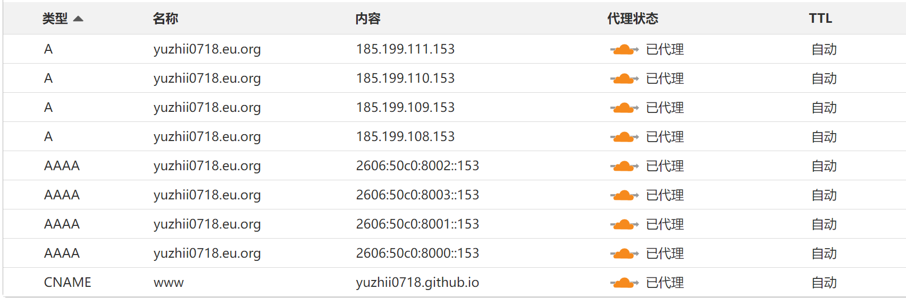
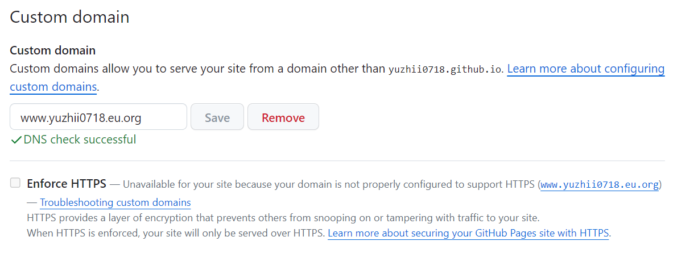
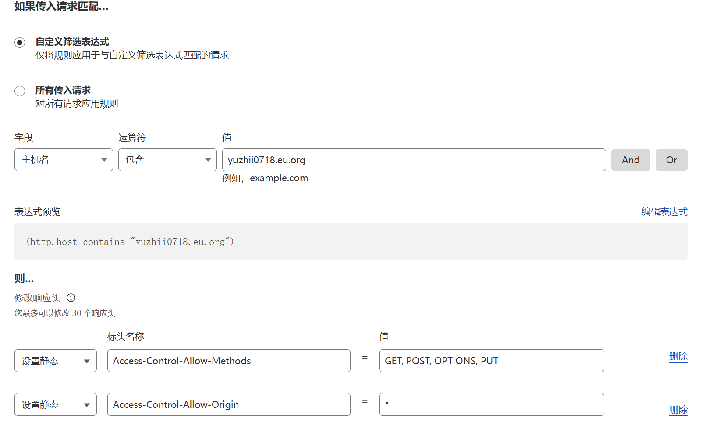

让 Github Page 使用 eu.org 域名
让 Github Page 使用 eu.org 域名
目前，由于受到 DNS 污染以及 SNI 阻断，大陆地区的用户访问 Github Page 会遇到很多问题。
这让我不得不寻找一种替代方案，让我能够让我的网站能够被大陆地区的用户访问。
注册 eu.org 域名
访问 eu.org 注册一个域名，这网上教程很多，这里不再赘述。
注意的是大陆地区的用户可能要花费很长时间才能收到注册成功的邮件。根据网上网友的反馈，大约是 2个月到1年不等。
我的是 3 个月左右收到的邮件。
配置 DNS
在 eu.org 网站上，找到你注册的域名，然后配置 DNS。
HOSTRY
HOSTRY 是一个免费的 DNS 服务商，注册一个账号，然后添加域名。
但是，这只是用于初步测试的
在 eu.org 网站上，找到你注册的域名，然后配置 DNS。
Github Page
在你的 Github Page 仓库中，找到 Settings -> Pages -> Custom domain，然后输入你的域名。
这个域名需要有前缀 www，例如 www.example.eu.org。
CLOUDFLARE
Cloudflare 是一个免费的 DNS 服务商，注册一个账号，然后添加域名。
这个的作用是，你的域名需要有一个 DNS 服务器，这个服务器会解析你的域名，然后指向你的 Github Page。
在这里，你需要添加 A 记录、AAAA 记录、CNAME 记录。
1. 添加 A 记录
在 Cloudflare 上，添加 A 记录，指向 Github Page 的 IP 地址。
2. 添加 AAAA 记录
在 Cloudflare 上，添加 AAAA 记录，指向 Github Page 的 IP 地址。
3. 添加 CNAME 记录
在 Cloudflare 上，添加 CNAME 记录，指向你的 Github Page。
eg

这些 ipv4 和 ipv6 地址是 Github Page 的地址，你可以在 Github Page 的文档中找到。
等待
等待一段时间，然后访问你的域名，如果能访问你的 Github Page，那么就成功了。
安全性
这里需要注意的是，你的域名需要使用 HTTPS，这样才能保证你的网站的安全性。
所以我们需要在 Cloudflare 上配置一些东西。
DNS
这里，我们让 Cloudflare 代理我们的域名，这样我们的域名就能使用 HTTPS。
SSL/TLS
在 Cloudflare 上，找到 SSL/TLS，然后配置 Full。
边缘证书需要配置 始终使用 HTTPS、随机加密、LTS 1.3、自动 HTTPS 重写。
源服务器证书需要配置 经过身份验证的源服务器拉取。
问题
我在这里遇到了一个问题，就是 Github Page 无法强制使用 HTTPS。
这个问题我还没有解决，如果有人知道，希望能够告诉我。

此外，出于某些原因，例如 CORS 策略问题，我不得不将 Cloudflare 的安全性设置为 低，并且关闭浏览器完整性检查。
24年3月25日更新
需要把 Cloudflare DNS 的代理模式设置为 DNS only，这样 Github Page 才能强制使用 HTTPS。
但是其实无所谓了，使用 Cloudflare 的代理模式，也能够使用 HTTPS。
因为是基于 Github Page 的，所以也没办法在服务器上安装证书，Cloudflare 也只能使用 完全 SSL/TLS。
24年5月9日更新
大约在4月中旬的时候，我发现我的域名无法访问了，然后利用网路上的gfw检测工具，发现我的域名被墙了。
然后神奇的是，这个好像只是地区性的，有的地区可以访问，有的地区无法访问。但是并没有被污染。
并在在5月初的时候，我发现我的域名可以访问了。
这个防火墙，把我气笑了。
参考
免费注册申请永久的eu.org顶级域名创建属于自己的域名,再也不用给博客域名续费了!
管理 GitHub Pages 站点的自定义域
24年12月9日更新
Cloudflare访问速率限制
进入域名，找到 防火墙 > WAF > 访问速率限制，然后配置。
CloudFlare 解决 CORS 跨域问题
规则 > 转换规则 > 修改相应头

参考 基于Hexo的matery主题搭建博客增强部署篇4